|
<< Click to Display Table of Contents >> Navigation: Rus > Руководство администратора > Как управлять ролями пользователей > Как определить роли в системе и организовать пользователей в группы |
Для того, чтобы пользователь с нужной ролью мог что-то делать в определенной задаче, нужно дать ему к этой или вышестоящей задаче доступ. Доступ можно разрешить как непосредственно пользователю, так и всем своим подчиненным пользователям с определенной ролью.
Допустим, у нас есть несколько разработчиков и несколько проектов. К каждому из этих проектов нужно привязать свою команду из разработчиков.
В "плоской схеме" распределение пользователей по командам и проектам осуществляется не за счет иерархии пользователей, а за счет прямой их привязки к проектам через права доступа.
Допустим, у нас есть список пользователей:
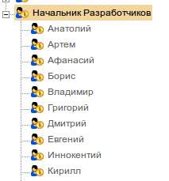
Часть пользователей назначим на "Проект Б":
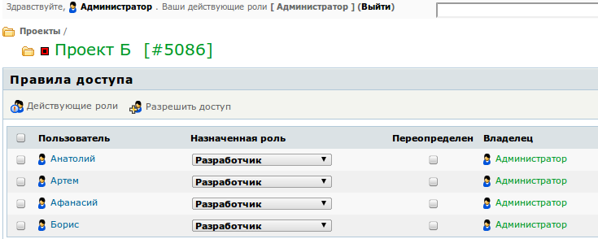
Часть на "Проект В"
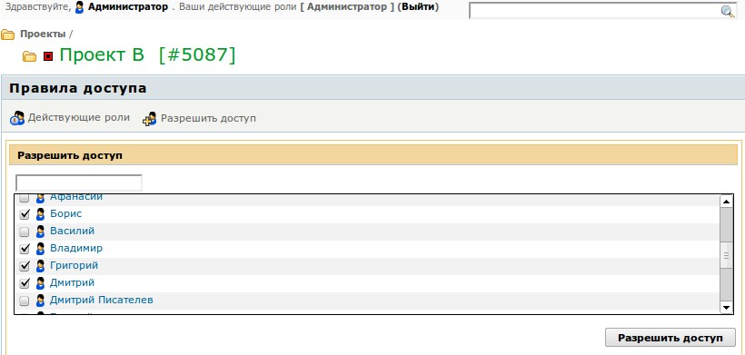
Получится два проекта с разделенными командами. При этом пользователи соседних команд не видят чужих проектов.
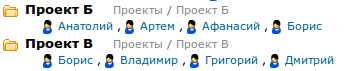
В такой схеме просто добавлять новых пользователей в проект, и создавать новые проекты. Однако если требуется добавлять в проект большое число пользователей, либо в разных проектах часть пользователей должна играть роль разработчиков, а остальные - наблюдателей, или если одна команда занята в нескольких проектах, такая схема будет не удобна.
В случае, если у вас устоявшиеся команды разработчиков, состав которых меняется нечасто, Вы можете организовать команды разработчиков вот так:
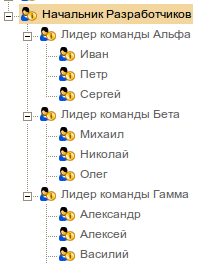
При этом "Лидер команды Альфа" и т.п. могут быть как реальными пользователями, так и виртуальными. Во втором случае в качестве лидера команды можно назначить одного из (или нескольких) других пользователей.
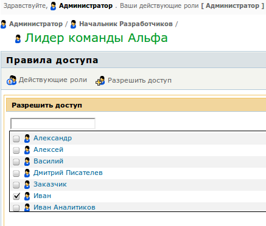
Смысл этого действия в том, что в TrackStudio каждый пользователь может управлять доступом только для подчиненных пользователей. Подчиненность определяется иерархией пользователей и правилами доступа для пользователей (см. рис. выше).
Теперь, для того, чтобы дать команде "Альфа" доступ на "Проект А" нужно:
Вышестоящим пользователем (в данном случае это Администратор или Начальник разработчиков) дать доступ для "Лидера команды Альфа" либо на корневую задачу, либо непосредственно на "Проект А".
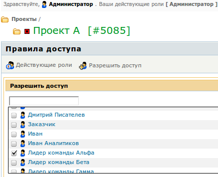
Обязательно нужно, чтобы у этого пользователя в этом проекте была роль, позволяющая управлять правами доступа к задачам.
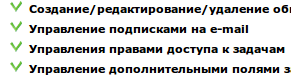
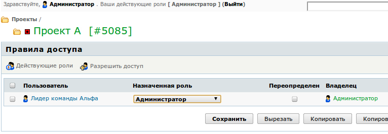
Затем зайдите в систему этим пользователем (можно использовать пароль от корневого пользователя). Разрешите доступ пользователям с ролью "Разработчик"
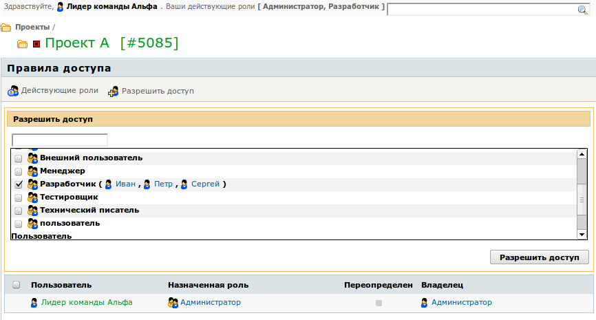
Вот кто после этого будет иметь доступ к "Проекту А"
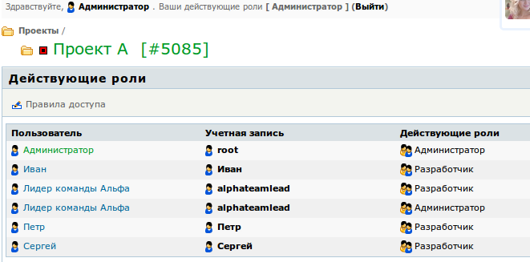
Аналогично настраиваются права для остальных команд на остальные проекты.